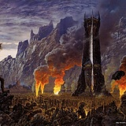
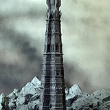
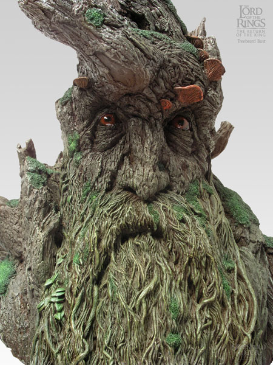

Isengard was built in the Second Age around the tower of Orthanc by the
Númenoreans, in exile in the days of their power in Nan Curunir (The Wizards
Vale) in The Misty Mountains. Its location was at the northwestern corner of
the Southern Kingdom of Gondor, guarding the Fords of Isen from enemy incursions
into Calenardhon, and together with the fortress of Helm's Deep to its south
protected the Gap of Rohan.
Isengard was comprised of a circular stone-wall surrounding a broad plain, in
the center of which was the Tower of Orthanc. Isengard had only one gate, which
faced south.
The river Angren (or Isen) began at Methedras behind Isengard, which also formed
its northern wall. The other three sides were guarded by a large wall, known as
the Ring of Isengard, which was only breached by the inflow of the river Angren
at the northeast through a portcullis, and the gate of Isengard at the south, at
both shores of the river. The Gate was said to be able to open without a sound.
Isengard was, at first, a green and beautiful tower complex, with many large
trees and grass fields, fed by the river until it was dammed by Saruman. After
the Wizard's defeat, however, Treebeard and the rest of the Ents made it a
vivid green area again, after destroying the walls and dam, renaming it the
"Treegarth of Orthanc".
History
Orthanc was the black, impenetrable tower of Isengard built by the Dúnedain. By
the Great Years and the War of the Ring it was possessed by the wizard Saruman
the White. It stood in the centre of the Ring of Isengard, surrounded by great
defensive walls fortified by the early Men of Gondor.
"A great ring-wall of stone, like towering cliffs, stood out from the shelter of
the mountain-side, from which it ran and then returned again... one who passed
in and came at length out of the echoing tunnel, beheld a plain, a great circle,
somewhat hollowed like a vast shallow bowl: a mile it measured from rim to rim.
Once it had been green and filled with avenues, and groves of fruitful trees,
watered by streams that flowed from the mountains to a lake. But no green thing
grew there in the latter days of Saruman. The roads were paved with stone-flags
dark and hard; and beside their borders instead of trees there marched long
lines of pillars, some of marble, some of copper and of iron, joined by heavy
chains, to the centre all the roads ran between their chains. There stood a
tower of marvelous shape. It was fashioned by the builders of old, who smoothed
the Ring of Isengard, and yet it seemed a thing not made by the craft of Men,
but riven from the bones of the earth in the ancient torment of the hills. A
peak and isle of rock it was, black and gleaming hard: four mighty piers of
many-sided stone were welded into one, but near the summit they opened into
gaping horns, their pinnacles sharp as the points of spears, keen-edged as
knives. Between them was a narrow space, and there upon a floor of polished
stone, written with strange signs, a man might stand five hundred feet above the
plain."
- Orthanc as depicted by J.R.R Tolkien
The tower was constructed out of four piers of stone and then hardened by an
unknown process. No weaponry or magic that existed on Arda was known to be able
to harm it. Until the Ents that besieged Isengard during the War of th Ring
managed to inflict slight damage on the tower, but their efforts ultimately
proved to be futile. When Grima threw the Orthanc stone it fell on the stairs;
the rail snapped and part of the staircase broke.
The only entrance to the tower was reached by a stair of twenty-seven steps, the
door could only be opened with the Keys of Orthanc. Above the door there was a
balcony, and many tall windows higher up.
Orthanc

Orthanc was the black, impenetrable tower of Isengard built by the Dúnedain. By
the Great Years and the War of the Ring it was possessed by the wizard Saruman
the White. It stood in the centre of the Ring of Isengard, surrounded by great
defensive walls fortified by the early Men of Gondor.
"A great ring-wall of stone, like towering cliffs, stood out from the shelter of
the mountain-side, from which it ran and then returned again... one who passed
in and came at length out of the echoing tunnel, beheld a plain, a great circle,
somewhat hollowed like a vast shallow bowl: a mile it measured from rim to rim.
Once it had been green and filled with avenues, and groves of fruitful trees,
watered by streams that flowed from the mountains to a lake. But no green thing
grew there in the latter days of Saruman. The roads were paved with stone-flags
dark and hard; and beside their borders instead of trees there marched long
lines of pillars, some of marble, some of copper and of iron, joined by heavy
chains, to the centre all the roads ran between their chains. There stood a
tower of marvelous shape. It was fashioned by the builders of old, who smoothed
the Ring of Isengard, and yet it seemed a thing not made by the craft of Men,
but riven from the bones of the earth in the ancient torment of the hills. A
peak and isle of rock it was, black and gleaming hard: four mighty piers of
many-sided stone were welded into one, but near the summit they opened into
gaping horns, their pinnacles sharp as the points of spears, keen-edged as
knives. Between them was a narrow space, and there upon a floor of polished
stone, written with strange signs, a man might stand five hundred feet above the
plain."
- Orthanc as depicted by J.R.R Tolkien
The tower was constructed out of four piers of stone and then hardened by an
unknown process. No weaponry or magic that existed on Arda was known to be able
to harm it. Until the Ents that besieged Isengard during the War of th Ring
managed to inflict slight damage on the tower, but their efforts ultimately
proved to be futile. When Grima threw the Orthanc stone it fell on the stairs;
the rail snapped and part of the staircase broke.
The only entrance to the tower was reached by a stair of twenty-seven steps, the
door could only be opened with the Keys of Orthanc. Above the door there was a
balcony, and many tall windows higher up.
Ents
Ents, also known as Onodrim (Tree-host) by the Elves, are a very old race that
appeared in Middle Earth at the same time that the elves did. They were
apparently created at the behest of Yavanna after she learned of Aulë's children,
the dwarves, knowing that they would want to fell trees.

Ents were envisioned as Shepherds of the Huorns, to protect the forests from
orcs and other perils. The elves had tales of teaching the trees and the Ents to
talk: although the Ents were sentient beings at the time, they did not know how
to speak until the elves taught them. Treebeard spoke of the elves "curing the
Ents of their dumbness", that it was a great gift that could not be forgotten
("always wanted to talk to everything, the old Elves did").
Ents are tree-like creatures, having become more and more like the trees that
they herded. They vary in traits, from everything to height and size, colouring,
and the number of fingers and toes. An individual Ent more or less resembles the
specific species of tree that they typically guard. For example, Quickbeam
guarded huorns that resembled rowans, and thus looked very much like those
huorns (tall and slender, etc.). Ents are very strong, as recounted by Merry
and Pippin: "their punches can crumple iron like tinfoil, and they can tear apart
solid rock like breadcrusts." In the Third Age of Middle-earth, the forest of
Fangorn was apparently the only place ents still inhabited, although the huorns
may still have survived elsewhere, as in the Old Forest.